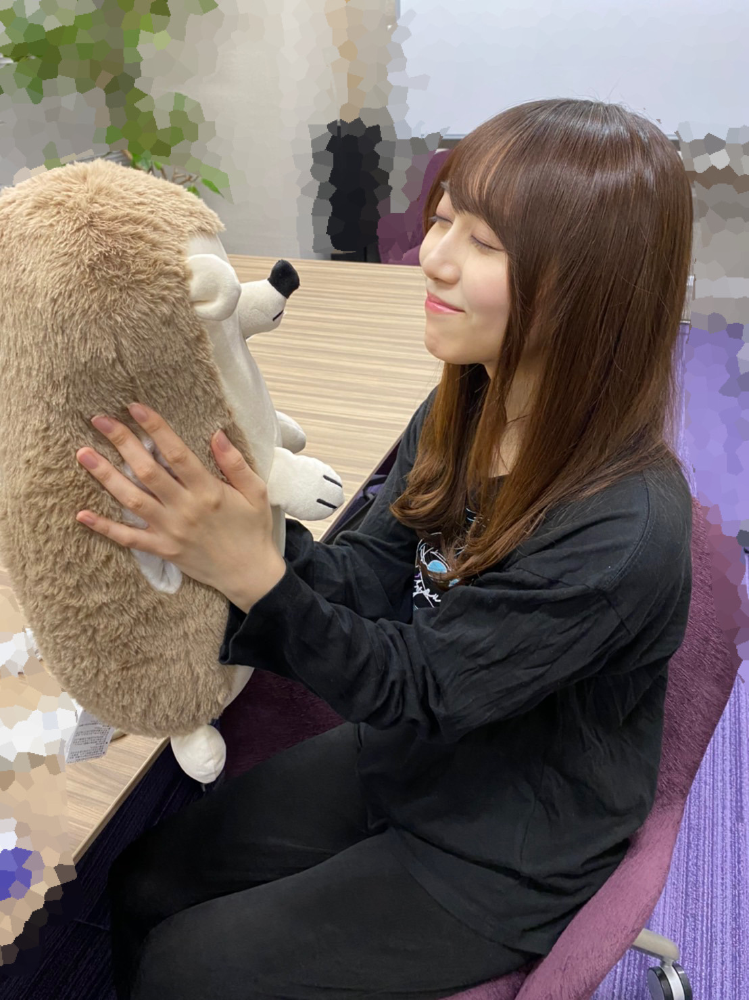
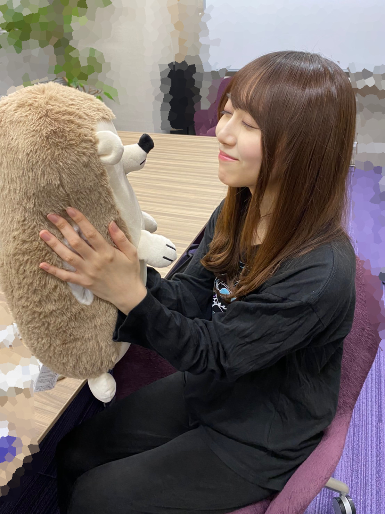

2020/1125Wed林瑠奈です。お疲れですか
最近よく月を見るんです。
月って遠いのに、不思議と身近に感じませんか。
月は地球に裏側を見せない。
静かでなんか包容力もある。
なんだか随分ロマンチストですね、私。
よくカップルが電話をしているときに言う
『今わたしたち同じ月見てるんだよね♡』ってやつ
それ、私も同じ月見てるよって思った。
♪:*:･･:*:･･:*:･･:*:･･:*:･･:*:♪:*:･･:*:･･:*:･･:*:･･:*:･･:
Q 皆にすすめたいもの、ことってある？
A ありますよ
Q →大学合格しました！おめでとうください！
A 心の底からおめでとう！
Q 卵焼きは甘いのとしょっぱいのどっちが好きですか！！！！！！！
A だし巻き卵が好きです。
Q 髪が伸びてきてはやしくらいに切りたいんだけどまだ行けてなくて急かしてほしい！笑
A 早く行きなさい。
Q 冬にやる手持ち花火ってなんかよくないですか？
A すぐ火が消えそう
風情はありますよね、すぐ火が消えそうだけど
Q るなぴは赤シート使う派ですか？？
A 使うけどすぐ無くしてしまいます。
Q 林にとってより良い日々になりますように！
A ありがとうございます。
あ、そうそう
なおがハリネズミのぬいぐるみと戯れてる写真撮ったよ

上着を着てたのでしわしわになったとのこと。
♪:*:･･:*:･･:*:･･:*:･･:*:･･:*:♪:*:･･:*:･･:*:･･:*:･･:*:･･:
明日はみゆちゃんです
みゆちゃんの靴下かわいい
靴脱ぐことないやろなって思って選んだときの靴下が特にかわいい
アディオス！！！！！！
夜を迎えて明日を連れてこようとする世界
時間が絶えず進んでいくなか
私は、、、
P.S.前回ブログの最後、めっちゃ嘘つきました！ごめんなさい。
次やりますね〜
かしこ
最近よく月を見るんです。
月って遠いのに、不思議と身近に感じませんか。
月は地球に裏側を見せない。
静かでなんか包容力もある。
なんだか随分ロマンチストですね、私。
よくカップルが電話をしているときに言う
『今わたしたち同じ月見てるんだよね♡』ってやつ
それ、私も同じ月見てるよって思った。
♪:*:･･:*:･･:*:･･:*:･･:*:･･:*:♪:*:･･:*:･･:*:･･:*:･･:*:･･:
Q 皆にすすめたいもの、ことってある？
A ありますよ
Q →大学合格しました！おめでとうください！
A 心の底からおめでとう！
Q 卵焼きは甘いのとしょっぱいのどっちが好きですか！！！！！！！
A だし巻き卵が好きです。
Q 髪が伸びてきてはやしくらいに切りたいんだけどまだ行けてなくて急かしてほしい！笑
A 早く行きなさい。
Q 冬にやる手持ち花火ってなんかよくないですか？
A すぐ火が消えそう
風情はありますよね、すぐ火が消えそうだけど
Q るなぴは赤シート使う派ですか？？
A 使うけどすぐ無くしてしまいます。
Q 林にとってより良い日々になりますように！
A ありがとうございます。
あ、そうそう
なおがハリネズミのぬいぐるみと戯れてる写真撮ったよ

上着を着てたのでしわしわになったとのこと。
♪:*:･･:*:･･:*:･･:*:･･:*:･･:*:♪:*:･･:*:･･:*:･･:*:･･:*:･･:
明日はみゆちゃんです
みゆちゃんの靴下かわいい
靴脱ぐことないやろなって思って選んだときの靴下が特にかわいい
アディオス！！！！！！
夜を迎えて明日を連れてこようとする世界
時間が絶えず進んでいくなか
私は、、、
P.S.前回ブログの最後、めっちゃ嘘つきました！ごめんなさい。
次やりますね〜
かしこ
2020/11/25 18:36
コメント(168)
月の大きさ ️乃木坂の歌に有るさ (*´∀｀)乃木坂にはまった頃の歌だよ (*´∀｀)るなちゃん♪ヽ(´▽｀)/
ブログ更新ありがとうございます。
林はとってもロマンチスト
林はとってもロマンチスト
チャァオ〜〜〜!☆彡
あ、
あ〜〜〜〜！？・・
るなちゃん❕・・
質問コーナーのことおお〜〜〜❕❔❤️❤️❤️❤️❤️笑顔
いいよ〜〜まだ大丈夫だよ〜〜〜⤴️⤴️⤴️❕❤️❤️❤️❤️❤️笑顔
それより〜シーズン的に〜〜そろそろテストじゃな〜〜〜い❕❔❤️❤️❤️❤️❤️笑顔
るなちゃん、質問コーナーは慌てなくていいよ〜〜〜❕❤️❤️❤️❤️❤️笑顔❤️❤️❤️❤️❤️
それより〜〜今度〜〜〜・・・
ウインク写メが見てみたいです❕❤️❤️❤️❤️❤️笑顔
それでは〜るなちゃん、頑張ってねぇ〜〜〜⤴️⤴️⤴️❕❤️❤️❤️❤️❤️笑顔❤️❤️❤️❤️❤️
(＠＾▽゜＠）ゞ❤️❤️❤️
❇️❇️おすまし！⚜️❇️⭐彡
林さんはお名前が
瑠奈
ですもんね。
ルナはラテン語で月
を意味しますからね。
何か月に親和性がある
のかもしれません。
私も月が大好きで綺麗な
満月が見える日はよく
夜空を見上げています。
なんだか今にもかぐや姫が
降りてきそうでずっと
見てしまいます。
しかし私なんかの所に
降りてくるのはせいぜい
じゃじゃ馬姫でしょう。
恋人達が月を見るのは
2人が離れている物理的
な距離から心の不安定が
生まれそれを同じものを
見る事で安定させる心理
なのかもしれませんね。
安定の中に好きが。
不安定の中に好きが。
二律背反といった所
でしょうか。
このような要素が含まれる
事に人は自然と感情が動く
ようになっている気が
します。
激しく。
深く。
瑠奈
ですもんね。
ルナはラテン語で月
を意味しますからね。
何か月に親和性がある
のかもしれません。
私も月が大好きで綺麗な
満月が見える日はよく
夜空を見上げています。
なんだか今にもかぐや姫が
降りてきそうでずっと
見てしまいます。
しかし私なんかの所に
降りてくるのはせいぜい
じゃじゃ馬姫でしょう。
恋人達が月を見るのは
2人が離れている物理的
な距離から心の不安定が
生まれそれを同じものを
見る事で安定させる心理
なのかもしれませんね。
安定の中に好きが。
不安定の中に好きが。
二律背反といった所
でしょうか。
このような要素が含まれる
事に人は自然と感情が動く
ようになっている気が
します。
激しく。
深く。
る、瑠奈ぴが確実にこの1年で成長してきている...
去年1年は見た目がみるみると可愛くなってってたしな〜
こら林ちゃんの成長のモーメンタムがまったくとまらんぜ
将来楽しみな瑠奈ぴから目を離して乗り遅れ瑠奈だな
去年1年は見た目がみるみると可愛くなってってたしな〜
こら林ちゃんの成長のモーメンタムがまったくとまらんぜ
将来楽しみな瑠奈ぴから目を離して乗り遅れ瑠奈だな
こんばんは。ブログ更新ありがとうございます。
冬は空気が澄んでいるので、お月様や星々がきれいに見えますね。ギリシャ神話やローマ神話では、太陽神が男性なのに対して、月の神は女性なのは象徴的です。海の満ち引きも月の影響でしたね。
4期生ライブが近づいてきて、リハやプロモーションに忙しくなってきたようですね。無事本番を迎えられるよう、怪我と病気にはくれぐれもご注意を。
ではまた。
冬は空気が澄んでいるので、お月様や星々がきれいに見えますね。ギリシャ神話やローマ神話では、太陽神が男性なのに対して、月の神は女性なのは象徴的です。海の満ち引きも月の影響でしたね。
4期生ライブが近づいてきて、リハやプロモーションに忙しくなってきたようですね。無事本番を迎えられるよう、怪我と病気にはくれぐれもご注意を。
ではまた。
はやし更新ありがとう！
お疲れですか？…お疲れです！！
はやしは大丈夫？
珍しくかわいい区切り方してますね笑
ジャルジャルンルン気分見ました？
いい感じの構成で面白かったですね！
南くん出てきた時めっちゃ嬉しくなってしまった自分にめっちゃびっくりしました笑
アディオス！！！！！！
私は…昨日に戻ってしまう…みたいな？
P.S.はやしめっちゃ忙しそうやね
わからんけど息抜きしながら楽しんでねぇ〜！！
かしこ
お疲れですか？…お疲れです！！
はやしは大丈夫？
珍しくかわいい区切り方してますね笑
ジャルジャルンルン気分見ました？
いい感じの構成で面白かったですね！
南くん出てきた時めっちゃ嬉しくなってしまった自分にめっちゃびっくりしました笑
アディオス！！！！！！
私は…昨日に戻ってしまう…みたいな？
P.S.はやしめっちゃ忙しそうやね
わからんけど息抜きしながら楽しんでねぇ〜！！
かしこ
瑠奈さん、お疲れですか？
るなぴ＼(^o^)／お疲れ様でした
るなぴはロマンチストってさすがだな＼(^o^)／
普段もさやかちゃんたちとラブラブだよね＼(^o^)／（笑）
なおちゃんのショット可愛い(*´ω｀*)♡
そして前回のブログの嘘許すよ
（もう覚えてないからｗ）
これからも頑張って(/･ω･)/
るなぴはロマンチストってさすがだな＼(^o^)／
普段もさやかちゃんたちとラブラブだよね＼(^o^)／（笑）
なおちゃんのショット可愛い(*´ω｀*)♡
そして前回のブログの嘘許すよ
（もう覚えてないからｗ）
これからも頑張って(/･ω･)/
月の光は愛のメッセージ。
シンプルな質問返しも中々。
ハリネズミのぬいぐるみ、大きくて可愛いですね。戯れるなおちゃんが微笑ましい。
アディオス。
シンプルな質問返しも中々。
ハリネズミのぬいぐるみ、大きくて可愛いですね。戯れるなおちゃんが微笑ましい。
アディオス。
写真出してくれ〜見せてくれ〜〜。
淋しいのです。
大好きです。
淋しいのです。
大好きです。
いつもと違った感じのブログ？
こんな日もたまにはいいよね！
こんな日もたまにはいいよね！
こんばんぴ
秋の月は風情ありますね～
遠くに居るのに身近感あるし、
裏側を見せず包容力も感じる♪
るなぴもとっても神秘的ですよ！
だし巻き卵は関西人マストやね☆
なおちゃん写真ほっこりします！
みゆちゃんもとても個性的です✨
新4期生なかなかオモローです✌
アディオ～ス☺
秋の月は風情ありますね～
遠くに居るのに身近感あるし、
裏側を見せず包容力も感じる♪
るなぴもとっても神秘的ですよ！
だし巻き卵は関西人マストやね☆
なおちゃん写真ほっこりします！
みゆちゃんもとても個性的です✨
新4期生なかなかオモローです✌
アディオ～ス☺
るなぴブログ更新ありがとう〜
ノギザカスキッツ「スマイルガールズ」見ましたよ〜
さくらさんの好きな人の名前が「みなみ」だったので、「乃木坂メンバーの名前で行くのかな？」と思った矢先、るなぴがの好きな人の名前が「西」だったので「東」オチが予測できました笑
お笑い好きを存分に発揮できてすごく良かったと思います！
あの方法なら本当にジャルジャルさんに届きそうですね！笑
また次のスキットも楽しみにしています！
今日は26thシングル「僕は僕を好きになる」が初披露されましたね！
山下美月さん新センターで、すごく良い曲だと思いました。
僕もるなぴも大好きな杉山勝彦さんの作曲はやっぱり良いなぁと感じました！
CDリリースが待ち遠しいです。
寒さに気をつけてご自愛くださいね！
あでぃおす！！！
ノギザカスキッツ「スマイルガールズ」見ましたよ〜
さくらさんの好きな人の名前が「みなみ」だったので、「乃木坂メンバーの名前で行くのかな？」と思った矢先、るなぴがの好きな人の名前が「西」だったので「東」オチが予測できました笑
お笑い好きを存分に発揮できてすごく良かったと思います！
あの方法なら本当にジャルジャルさんに届きそうですね！笑
また次のスキットも楽しみにしています！
今日は26thシングル「僕は僕を好きになる」が初披露されましたね！
山下美月さん新センターで、すごく良い曲だと思いました。
僕もるなぴも大好きな杉山勝彦さんの作曲はやっぱり良いなぁと感じました！
CDリリースが待ち遠しいです。
寒さに気をつけてご自愛くださいね！
あでぃおす！！！
初コメントです！
質問して良いですか？
林は森に改名することってないの？
採用されますように
質問して良いですか？
林は森に改名することってないの？
採用されますように
そうだね～
カップルってよく言うよね～
『今同じ月見てるんだよね♡』って
でいて『君は僕の太陽だ』
とか言っちゃってねぇ～？
付き合いたては気持ちが浮き浮き
無重力状態なんですかねぇ～！！！！！！


カップルってよく言うよね～
『今同じ月見てるんだよね♡』って
でいて『君は僕の太陽だ』
とか言っちゃってねぇ～？
付き合いたては気持ちが浮き浮き
無重力状態なんですかねぇ～！！！！！！
この前の猫舌で掛橋さんとの軽快なトークが本当に楽しくてファンになりました！
瑠奈ちゃん更新ありがとう〜！
月の話、瑠奈ちゃんもそうやってロマンティックなこと
考えるんだな〜って意外に思ってたけど(失礼)、
最後がやっぱり瑠奈ちゃんで笑ってしまいました……(笑)
……でも、瑠奈ちゃんと同じ月を私も観ているってなんだかすごく嬉しいなって、ニヤニヤしてしまいました(白目)
ハリネズミとなおさんはもう罪です。
可愛すぎますね罪で、林さんが逮捕しといてください。
質問コーナー、何も言わずに入ったなぁ……って思ってたら
そういうことだったんだ(笑)
でも、瑠奈ちゃんも忙しいと思うし、大事な人生の一部を見させて頂いてるんだから文句はないです。
っていうか謝り方可愛すぎたので10000億点あげます。
次の質問コーナーのために、前回書いた質問と、新しいのも
最後に書いておきます！
それでは、アディオス！！！れ！
Q.瑠奈ちゃんはファンの名称決めないんですか？
Q.女子から推されてるって嬉しいですか、？
Q.私服はどこで買ってますか？
Q.るなっっっっっさぁぁぁぁぁぁぁぁぁぁんす？？？(テンション884%)
Q.ライスください！！！！れ！
Q.とりあえず、中間テスト数学がある意味終わったので慰めてください。
Q.堀さん裏センターですね！！
かしこ。
月の話、瑠奈ちゃんもそうやってロマンティックなこと
考えるんだな〜って意外に思ってたけど(失礼)、
最後がやっぱり瑠奈ちゃんで笑ってしまいました……(笑)
……でも、瑠奈ちゃんと同じ月を私も観ているってなんだかすごく嬉しいなって、ニヤニヤしてしまいました(白目)
ハリネズミとなおさんはもう罪です。
可愛すぎますね罪で、林さんが逮捕しといてください。
質問コーナー、何も言わずに入ったなぁ……って思ってたら
そういうことだったんだ(笑)
でも、瑠奈ちゃんも忙しいと思うし、大事な人生の一部を見させて頂いてるんだから文句はないです。
っていうか謝り方可愛すぎたので10000億点あげます。
次の質問コーナーのために、前回書いた質問と、新しいのも
最後に書いておきます！
それでは、アディオス！！！れ！
Q.瑠奈ちゃんはファンの名称決めないんですか？
Q.女子から推されてるって嬉しいですか、？
Q.私服はどこで買ってますか？
Q.るなっっっっっさぁぁぁぁぁぁぁぁぁぁんす？？？(テンション884%)
Q.ライスください！！！！れ！
Q.とりあえず、中間テスト数学がある意味終わったので慰めてください。
Q.堀さん裏センターですね！！
かしこ。
ブログ更新ありがとう！
ロマンチックな書き出しだな…と思っていたら
「それ、私も同じ月見てるよって思った。」の文に笑わされてしまいました笑
ツッコミが鋭い所面白くて好きです。
ハリネズミと戯れてる写真とても良く撮れてるね！
他にもいろんな写真があったらたくさん載せてください！
瑠奈ちゃん推しとしては自撮りも欲しいです…(ﾎﾞｿｯ)
美佑ちゃんの細かいところまで見てるんだね笑
そういえば今日の猫舌ＳＲでお姉さんにしたいメンバーの第一位に二期生の新内眞衣さんを選んでたけど
瑠奈ちゃんが乃木坂46の中なら誰がお姉さんになってほしいですか？
やっぱり堀未央奈さんかな？
今日もお疲れ様、ゆっくりして下さいね。
p.s.健康という言葉はひとことで言っても体と心の両方が良い状態にあることを指すらしいですよ。
またね！
ロマンチックな書き出しだな…と思っていたら
「それ、私も同じ月見てるよって思った。」の文に笑わされてしまいました笑
ツッコミが鋭い所面白くて好きです。
ハリネズミと戯れてる写真とても良く撮れてるね！
他にもいろんな写真があったらたくさん載せてください！
瑠奈ちゃん推しとしては自撮りも欲しいです…(ﾎﾞｿｯ)
美佑ちゃんの細かいところまで見てるんだね笑
そういえば今日の猫舌ＳＲでお姉さんにしたいメンバーの第一位に二期生の新内眞衣さんを選んでたけど
瑠奈ちゃんが乃木坂46の中なら誰がお姉さんになってほしいですか？
やっぱり堀未央奈さんかな？
今日もお疲れ様、ゆっくりして下さいね。
p.s.健康という言葉はひとことで言っても体と心の両方が良い状態にあることを指すらしいですよ。
またね！
ノギザカスキッツお疲れ様！
足の指とか見られるの恥ずかしがる女の子もいるけど
パジャマ姿最高やった～！
スキッツにジャルジャル呼んで共演希望してみては？
ライブ前で大変な時期だけど更なるパフォーマンスに
期待(*^▽^*)
レイ先生のスパルタ指導が無事発揮できますように
(^^♪(;^ω^)
足の指とか見られるの恥ずかしがる女の子もいるけど
パジャマ姿最高やった～！
スキッツにジャルジャル呼んで共演希望してみては？
ライブ前で大変な時期だけど更なるパフォーマンスに
期待(*^▽^*)
レイ先生のスパルタ指導が無事発揮できますように
(^^♪(;^ω^)
こんばんは！
ノギザカスキッツ見たよ。
パジャマ姿を披露ということで、個人的には4期生ライブのアフター配信のリハをした感じですね(笑)。
ノギザカスキッツ見たよ。
パジャマ姿を披露ということで、個人的には4期生ライブのアフター配信のリハをした感じですね(笑)。
こんばんは～。
るなぴ、カップルに割って入ってるね。笑あと俺も同じ月を見てるよ。笑
奈於ちゃんは大きなハリネズミのぬいぐるみをもってるね！実は俺もハリネズミぐらいの大きさのくまのプーさんのぬいぐるみをもってるよ。笑
じゃあ。
るなぴ、カップルに割って入ってるね。笑あと俺も同じ月を見てるよ。笑
奈於ちゃんは大きなハリネズミのぬいぐるみをもってるね！実は俺もハリネズミぐらいの大きさのくまのプーさんのぬいぐるみをもってるよ。笑
じゃあ。
アディオス！！！！！！
るなるなブログ更新ありがとう！
質問タイム！
太陽系の惑星で何が1番好き？
また更新待ってます
質問タイム！
太陽系の惑星で何が1番好き？
また更新待ってます
こんばんは、はやし。
いまのはやしの素直さ20%
まだいける！
いまのはやしの素直さ20%
まだいける！
お疲れ様です
前回月が綺麗ですねのコメントしたので今回月の話でうれしかった
質問
乃木坂の曲で林がテンション上がる曲はなんですか？
自分はI see…が１番テンション上がります
４期生のぎおび週間なので林の出演も楽しみにしてます！
前回月が綺麗ですねのコメントしたので今回月の話でうれしかった
質問
乃木坂の曲で林がテンション上がる曲はなんですか？
自分はI see…が１番テンション上がります
４期生のぎおび週間なので林の出演も楽しみにしてます！
わたなべこうたというものなんですが、最近推さしてもらってます
これからも何卒よろしくお願いします
これからも何卒よろしくお願いします
月に反射した太陽光には、直接の太陽光には含まれていない成分が含まれているとかいないとか。
それはさておき、月を見ると気持ちが少し落ち着きます。
それはさておき、月を見ると気持ちが少し落ち着きます。
るなぴ〜ブログ更新おつかれさま！( ＾ω＾ )
ノギスキのコント見たよ〜、面白かった！白鳥さんの横だったね笑
寝言でジャルジャルさんへのメッセージ伝えてて笑っちゃったよ！
気を抜いた時の靴下で靴脱がなきゃいけないシチュエーションの時って困るよね笑
スーツ着る仕事だと黒ソックスばかりだからなかなかそういう機会がないなぁ
4期ライブ申し込みしたよ！めちゃくちゃ楽しみ！セトリはどんな感じになるんだろ〜、ライブ頑張ってね！
次のブログも楽しみにしてるね〜！
ノギスキのコント見たよ〜、面白かった！白鳥さんの横だったね笑
寝言でジャルジャルさんへのメッセージ伝えてて笑っちゃったよ！
気を抜いた時の靴下で靴脱がなきゃいけないシチュエーションの時って困るよね笑
スーツ着る仕事だと黒ソックスばかりだからなかなかそういう機会がないなぁ
4期ライブ申し込みしたよ！めちゃくちゃ楽しみ！セトリはどんな感じになるんだろ〜、ライブ頑張ってね！
次のブログも楽しみにしてるね〜！
月と地球の距離は38万km、そして太陽と地球の距離は1.5億km。地球から太陽への距離と地球から月への距離は395倍。不思議なのは太陽の直径の長さも月の395倍です。だから太陽と月の円盤は地球から同じくらい大きさに見えます。
まるで夜も白昼の光が必要だのために、誰かが月を地球のそばに置いていくみたいです。
他には、なぜこんなに小さな地球は月のような巨大な衛星を捕まえられるってことも謎の一つね。太陽系で地球以外他の全ての惑星の衛星は自体の大きさより遥かにちっちゃいです。地球と月のような比率、他の惑星にはありません。
神様がいるからですね。
まるで夜も白昼の光が必要だのために、誰かが月を地球のそばに置いていくみたいです。
他には、なぜこんなに小さな地球は月のような巨大な衛星を捕まえられるってことも謎の一つね。太陽系で地球以外他の全ての惑星の衛星は自体の大きさより遥かにちっちゃいです。地球と月のような比率、他の惑星にはありません。
神様がいるからですね。
千鳥弁当見てましたか？
カップルがよく言う
同じ月を見てるくだり
 を付けてるのが意外って言ったら失礼だけど
を付けてるのが意外って言ったら失礼だけど
ちょっとイメージ外でした。
あとは ひろめたいものはあるのに
言わないのかい！？
とか
あとあと
弓木ちゃんがハリネズミのぬいぐるみと戯れてる写真はありがとうございます。
しわしわは気にしてませんとお伝えください。
それじゃ今夜は この辺で。
Ｋ．Ｉでした。
おやすみ～☆ミ
同じ月を見てるくだり
ちょっとイメージ外でした。
あとは ひろめたいものはあるのに
言わないのかい！？
とか
あとあと
弓木ちゃんがハリネズミのぬいぐるみと戯れてる写真はありがとうございます。
しわしわは気にしてませんとお伝えください。
それじゃ今夜は この辺で。
Ｋ．Ｉでした。
おやすみ～☆ミ
林瑠奈ちゃん こんにちは
ブログ更新ありがとうございます。
なるほど、確かに「月」は不思議な魅力を持っていますね。最近ちょっと寒くなってきたので、さすがにじっと見る機会はなくなりましたが、寒くなると青白さが目立ってきますね。そうか、常に裏側を見せないか‥‥。
ところで、今日はもう一つ「美しい月」を見ましたよ。
本日初披露の乃木坂４６の新センター、そう、われらの「美月」こと山下美月ちゃんです。ひと際輝いていましたよ。こちらの月はこれからも燦然と輝く「美しい月」でありますよう、お祈りしております。
２６thの発売が待ち遠しい限りですが、その前に、４期生ライブ、配信申込も済みました。あとは当日がお楽しみです。
ブログ更新ありがとうございます。
なるほど、確かに「月」は不思議な魅力を持っていますね。最近ちょっと寒くなってきたので、さすがにじっと見る機会はなくなりましたが、寒くなると青白さが目立ってきますね。そうか、常に裏側を見せないか‥‥。
ところで、今日はもう一つ「美しい月」を見ましたよ。
本日初披露の乃木坂４６の新センター、そう、われらの「美月」こと山下美月ちゃんです。ひと際輝いていましたよ。こちらの月はこれからも燦然と輝く「美しい月」でありますよう、お祈りしております。
２６thの発売が待ち遠しい限りですが、その前に、４期生ライブ、配信申込も済みました。あとは当日がお楽しみです。
るなぴ更新ありがとう〜
ロマンチックなブログやん！って思ったら
ツッコミ入って爆笑しましたw
はりねずみと戯れるなおちゃんかわいい
次まで待ってるね〜アディオス！！
かしこ
ロマンチックなブログやん！って思ったら
ツッコミ入って爆笑しましたw
はりねずみと戯れるなおちゃんかわいい
次まで待ってるね〜アディオス！！
かしこ
はじめの月の話めっちゃ分かります！
この星を見てるのは“僕と君“と非リアの僕なんですよね笑
そんな電話してるやつは回線をジャックしてグループ通話でもしてやろうかと思ってしまいます...
さて、僕は現在絶賛考査二週間前中なのですが、林さんは考査勉強は事前からこつこつやるタイプですか？それとも前日詰め込み型ですか？
ちなみに僕はまだ手をつけてません...
年末にかけて徐々に忙しさが増していくと思いますが、体調にはお気をつけて...みかんなんかを食べつつ、無理しないように...
この星を見てるのは“僕と君“と非リアの僕なんですよね笑
そんな電話してるやつは回線をジャックしてグループ通話でもしてやろうかと思ってしまいます...
さて、僕は現在絶賛考査二週間前中なのですが、林さんは考査勉強は事前からこつこつやるタイプですか？それとも前日詰め込み型ですか？
ちなみに僕はまだ手をつけてません...
年末にかけて徐々に忙しさが増していくと思いますが、体調にはお気をつけて...みかんなんかを食べつつ、無理しないように...
あんま今までコメントしてないけど、かなり毎回ブログ楽しみにしてるけどもー。
おっつー 

負けるなしょげるな林瑠奈の事が好きになりそで…
怖い どーしよーどーしよー
どーしよーどーしよー
負けるなしょげるな林瑠奈の事が好きになりそで…
怖い
ノギザカスキッツ、隙あらばアドリブを放り込んでくる林が素敵です
お疲れさまです。
まけるな、しょげるな、はやしるな！
きょうもいちにちがんばるな！
ピンポーン！
ノギザカスキッツ＼(~ロ＼)
白鳥さんと対等にやり合えてるのが流石です。やっぱりおもしろくて、元気をもらえます。
お忙しいと思いますが、しっかりとご自身を労ってください。
ありがとう(*^ーﾟ)b
まけるな、しょげるな、はやしるな！
きょうもいちにちがんばるな！
ピンポーン！
ノギザカスキッツ＼(~ロ＼)
白鳥さんと対等にやり合えてるのが流石です。やっぱりおもしろくて、元気をもらえます。
お忙しいと思いますが、しっかりとご自身を労ってください。
ありがとう(*^ーﾟ)b
ブログ更新ありがとう！
るなぴが、月を見ていると思うと、なんかドキドキします！
ロマンチストですね！でも、見ようとする時には、日が入り始めているんですよね…。
負けるな、しょげるな、頑張るなで、明日もがんばります！
最後に質問です！笑
今夜は、月が綺麗ですか⁇
アディオス！！！
かしこ
るなぴが、月を見ていると思うと、なんかドキドキします！
ロマンチストですね！でも、見ようとする時には、日が入り始めているんですよね…。
負けるな、しょげるな、頑張るなで、明日もがんばります！
最後に質問です！笑
今夜は、月が綺麗ですか⁇
アディオス！！！
かしこ
るなぴ、月がきれいですね。今日も1日お疲れさま
林さんがこの前猫舌でジャルジャルさんのごりっていうネタが面白いって言ってたじゃないですか。で、見ようとして検索しても出てきません。どうしましょうか。
アディオス
アディオス
大好き 可愛いルナ
可愛いルナ
猫舌のふたりが楽しそうで、見ていてもとても楽しい気分になった。また出てね。
るなぴ、こんばんは(^o^)/
小さい頃、自分が歩くと同じように付いてくる(ように見える)月がすごい不思議だったな
質問の答えで、漠然とありますだけじゃ無くて具体的の答えて欲しいな
前回ブログの最後、めっちゃ嘘つきましたってちゃんと質問コーナーやってるし、何が嘘だったの？
『質問』
サンタクロースって何歳くらいまで信じてた？
るなぴは甘党？辛党？
限定品とか何名様限りって言葉に弱い？
そんなの気にしない？
小さい頃、自分が歩くと同じように付いてくる(ように見える)月がすごい不思議だったな
質問の答えで、漠然とありますだけじゃ無くて具体的の答えて欲しいな
前回ブログの最後、めっちゃ嘘つきましたってちゃんと質問コーナーやってるし、何が嘘だったの？
『質問』
サンタクロースって何歳くらいまで信じてた？
るなぴは甘党？辛党？
限定品とか何名様限りって言葉に弱い？
そんなの気にしない？
ロマンチスト瑠奈！
たまにはいいじゃん？
僕もよく月を見上げることがあるよ。
瑠奈と同じ月を見てるんだね！笑
最近の月は特に綺麗じゃない？
冬が近づいてきて空気が澄んでるのかな？
よそのカップルを冷やかすのはやめましょう。笑
って言うか、僕もよく乃木坂ちゃんに｢今日は満月だよ。一緒に空を見上げようよ｣って言うてしまう。。笑
あ、浮気してる訳じゃないっすよ！笑
時間が絶えず進んでいるけど、ちゃんとるなぴも前に進んでいます！
どうした？
元気無いの？
ほら！笑ってみ。
今回も少しだけど質問に答えてたけど、次はもっと答えてくれるのかな？
期待して質問しちゃいます。
るなぴは真冬になると何枚ぐらい重ね着しますか？
僕はバイク通勤ってこともあり、ヒートテックの半袖と長袖とタートルネックを着て、超極暖の長袖も着て、ウルトラライトダウンベストの上にモコモコのパーカーを着てからダウンジャケットを着ます！
バイクに乗る日だけね。
普段はもうちょい少ないよ。
でも基本寒がりなんです。
るなぴは寒さに強いですか？
次の質問いきます！
餃子は水餃子、焼き餃子、揚げ餃子どれが好きですか？
僕は焼き餃子が多いけどたまに揚げ餃子もおうちで作るよ。
次いくよ！
沙耶香と璃果どっちが特に仲良いですか？笑
今日沙耶香とやんちゃんが一緒にのぎおびやってたけど、ヤキモチやきました？笑
なんかもっといい質問ないかなぁ。。
また思い付いたらコメントするね。
たまにはいいじゃん？
僕もよく月を見上げることがあるよ。
瑠奈と同じ月を見てるんだね！笑
最近の月は特に綺麗じゃない？
冬が近づいてきて空気が澄んでるのかな？
よそのカップルを冷やかすのはやめましょう。笑
って言うか、僕もよく乃木坂ちゃんに｢今日は満月だよ。一緒に空を見上げようよ｣って言うてしまう。。笑
あ、浮気してる訳じゃないっすよ！笑
時間が絶えず進んでいるけど、ちゃんとるなぴも前に進んでいます！
どうした？
元気無いの？
ほら！笑ってみ。
今回も少しだけど質問に答えてたけど、次はもっと答えてくれるのかな？
期待して質問しちゃいます。
るなぴは真冬になると何枚ぐらい重ね着しますか？
僕はバイク通勤ってこともあり、ヒートテックの半袖と長袖とタートルネックを着て、超極暖の長袖も着て、ウルトラライトダウンベストの上にモコモコのパーカーを着てからダウンジャケットを着ます！
バイクに乗る日だけね。
普段はもうちょい少ないよ。
でも基本寒がりなんです。
るなぴは寒さに強いですか？
次の質問いきます！
餃子は水餃子、焼き餃子、揚げ餃子どれが好きですか？
僕は焼き餃子が多いけどたまに揚げ餃子もおうちで作るよ。
次いくよ！
沙耶香と璃果どっちが特に仲良いですか？笑
今日沙耶香とやんちゃんが一緒にのぎおびやってたけど、ヤキモチやきました？笑
なんかもっといい質問ないかなぁ。。
また思い付いたらコメントするね。
お疲れ様です。
今わたしたち同じ月見てるんだよね♡』の下り夕ご飯吹きそうになりました。
アディオス！！
今わたしたち同じ月見てるんだよね♡』の下り夕ご飯吹きそうになりました。
アディオス！！
林ちゃんは本当に詩人だね
詩集を出してほしいな
詩集を出してほしいな
お疲れ様です!
コメントする

PROFILE
新4期生リレー
202104
| SUN | MON | TUE | WED | THU | FRI | SAT |
|---|---|---|---|---|---|---|
| 1 | 2 | 3 | ||||
| 4 | 5 | 6 | 7 | 8 | 9 | 10 |
| 11 | 12 | 13 | 14 | 15 | 16 | 17 |
| 18 | 19 | 20 | 21 | 22 | 23 | 24 |
| 25 | 26 | 27 | 28 | 29 | 30 | |

そんなシヤシワになるって
鉛でできた上着､着てたのかね！？